Release Notes | Downloadable version
 Plugin Version:
Plugin Version:
1.4.40
Introduction
Batch Routing Plug-in is an extension that allows a batch derivation of cases for a process. This means that users can select one or more cases form the cases list to action them all at once. In addition, the information of those cases can be modified form the case list. The information is extracted from the fields of a grid previously created by the administrator. This plug-in can be set up on a ProcessMaker server.
Requirements
- ProcessMaker - Batch Routing plugin
- ProcessMaker V 2.0.35 up.
- To have at least one grid created on the process
Browser Requirements
- Firefox v20
- Chrome 26.0 or higher
- IE 8.0, IE 9.0
- IE 10 not supported yet.
Considerations
Triggers before or after Dynaforms are not executed when a case is routed from Batch Routing.
Installation and Configuration
- Import the Batch Routing plug-in on the ADMIN tab.
- Enabled the Plug-in.
- The plug-in Batch Routing will add an option on the Cases menu, on which the consolidated cases list is displayed.

- Configure the plug-in on Task Properties.
- Since this is a batch derivation, the plugin can only be activated from second task at least an Evaluation Routing Rule will be defined to have a loop to the first task.
To activate the plug-in right click on task properties where the batch routing will be applied, click on Consolidated Cases List tab select Enable consolidate for this task checkbox as the image below:
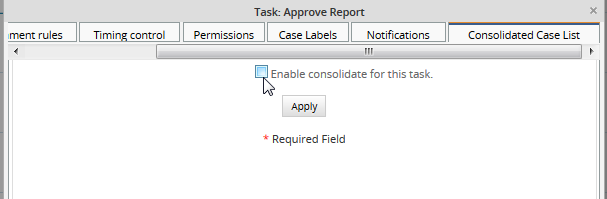
By enabling it, the following options will display:

Where:
- Dynaform template: choose the dynaform template which will be used to generate the batch derivation. Dynaform template will be a grid, all grids created in the process will be listed. Note that for each grid selected as a template a report table will create with the same information of the grid
- Table Name: enter a name for the table which will be created inside wf_workflow. On this table all the information of the grid selected will be stored. Available in version 1.4.13
- Title: Title of the report table created with the information of the grid. Available in version 1.4.13
After filling the fields, click on "Apply" button and then on "Save" button to apply changes, don't forget that you need to click on both buttons to save changes not only in the plugin but also in the task.
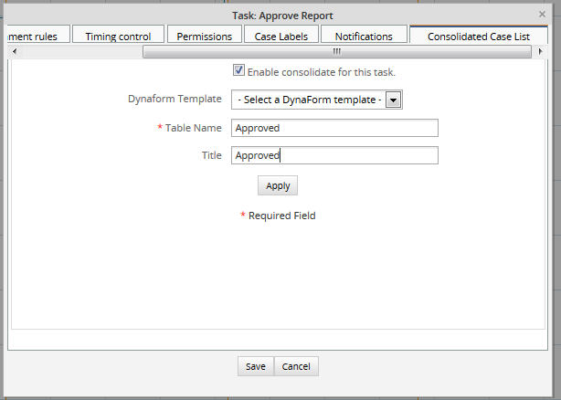
Note A Grid will correspond to the DynaForm that makes the derivation to the next task on a process.
It's possible to have several Grids on DynaForm that can be used by the plug-in, the creation of one or many of them will depend on its application and use.
If there's no grid created in a Dynaform the following message will display:
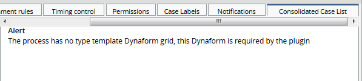
Considerations Before Starting
As it was mentioned before, when the plugin is enabled, a new option is added on cases list, where all cases will be stored to derive them in batch, check the following image:
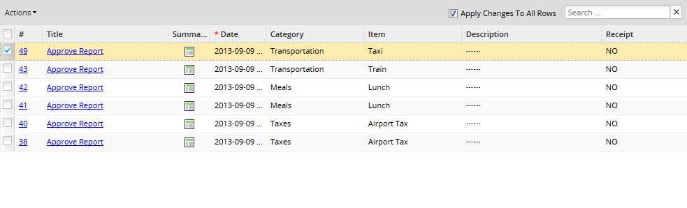
- Dependent Fields, masks, JavaScript validations don't work.
- Self service and Self Service Value Based Assignment assignment rules do not work with Batch Routing since it is not assigned to any user yet.
- Link and Read Only fields cannot be modified.
- Link field is not displaying in versions 2.0.45 and earlier.
- If you try to leave a required field in blank, it will be restored with its original value.
- In the consolidated list, each process, which has the batch routing plugin configured, will open in a different tab:
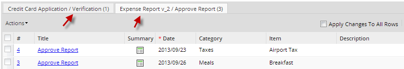
A great improvement added from version 1.4.40, the name of the process was added on each tab as well as a tooltip.
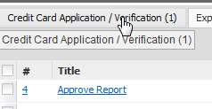
- And the following fields will be only supported by the plugin:
- DropDown
- Date
- Currency
- Percentage
- TextArea
- YESNO
- Hidden
- Link
- Textbox
How to derive cases in batch
Let's take the Expense Report process as an example, see image below:
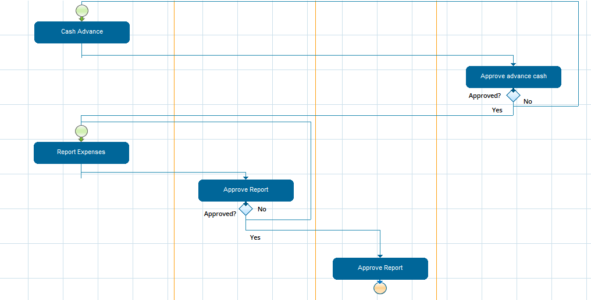
and configure the batch derivation on the "Approve Report" task:
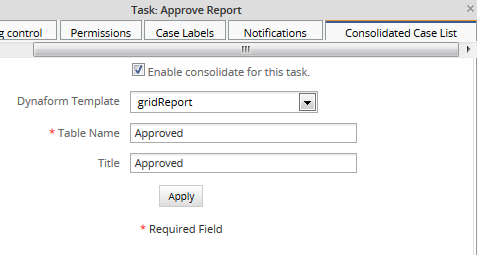
Start one or more cases starting on "Report Expense" and derive to "Approve Report" task, then go to "Batch Routing" option on the cases list and you will see all the cases derived:

Next to the Batch Routing option the number of cases to derive are displaying, in the case of the example cases to derive are 4, also a tab is added for each process which has cases to derive in batch.
To derive cases in batch, just select the case or cases by marking the checkbox next to the number of the case and then click on "Action" and select "Derivate" option
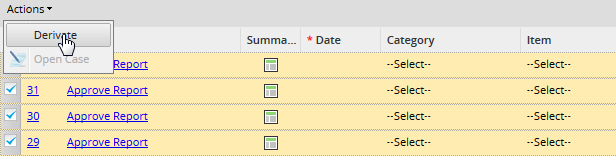
It is possible to check/uncheck all cases by selecting the main checkbox next to the # row:

A derivation result page will display indicating the case number, the task and user who will receive the case:

How to open a case form the batch routing list
If you don't require to derive the case but only open it and continue filling the information, you can open it by choose one of the following options:
- Click on the case number to open it:
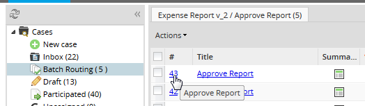
- Click on the task name:

- Select the case you want to open and then click on "Actions" and select "Open Case".
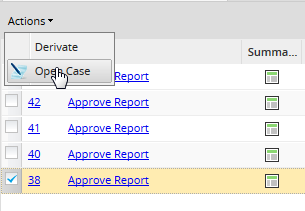
Note It is not possible to open more than one case at the same time.
Modifying the case data from the case list
Before deriving cases from the case list, it is possible to alter the information to be sent, double click on the field you want to modify and its edit mode will enable:
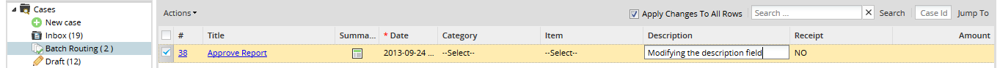
If more than one row needs to be modified with the same value, let's say a dropdown, mark the Apply Changes to All Rows and modify any value, then click on the blank area of the screen and the following message will display:
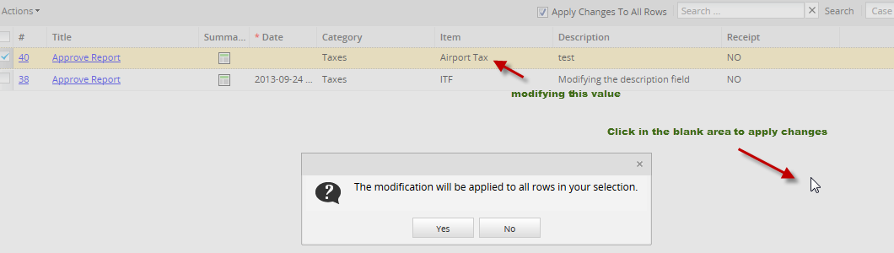
Then that value will be replicated in all the rows with the same field as the image below:
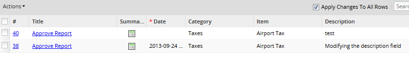
Search
 Available version: From 1.4.40
Available version: From 1.4.40
Includes a sub menu on the top of the consolidated list on which cases can be searched either by ID or specific information entered as a search criteria.
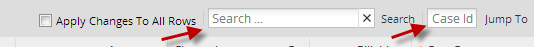
Searches are limited to the following type of fields:
On Currency and Percentage fields searches should be accurate, for instance if the value of 55.9 needs to be searched, the search criteria must be 55.9.
- Search: It is possible to enter a specific word as the image below:
- Case Id: It is possible to search a specific case Id.
Let's take the following scenery as an example:
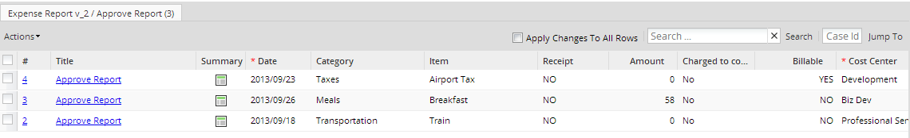
Enter 58, since this is a currency field, and click on Search option next to the textbox, result will be:
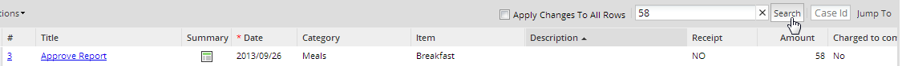
Now, enter a case Id, in this example 2 then click on Jump To option and the case number 2 will open:
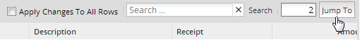